MILIASTRA WORKSHOP / EPISODE 08Debug, Back Up and Restore Your Project
Diagnose one deliberately wrong HUD binding, repair zero-to-one behaviour, then import the exact whole-save file into a separate card and verify a natural timed victory and achievements.
Use a separate practice copy. Compare visible pickup, native log, HUD and settlement before changing the graph. Restore Current to Player Themself.Coins, keep ProgressMin and CoinGoal as the range, save the template and scene, then verify the imported card with a complete timed run.
00:3801. Read the working binding first
Manage UI Control Groups → UI Control Group Library → CoinProgress → Functions. Read Current Progress Value=Player Themself.Coins, Minimum=Player Themself.ProgressMin, Maximum=Player Themself.CoinGoal. This real reference is from the working configuration immediately before the fault.
Official guide: Concept Introduction / Assets / UI Controls / Progress Bar UI Controls
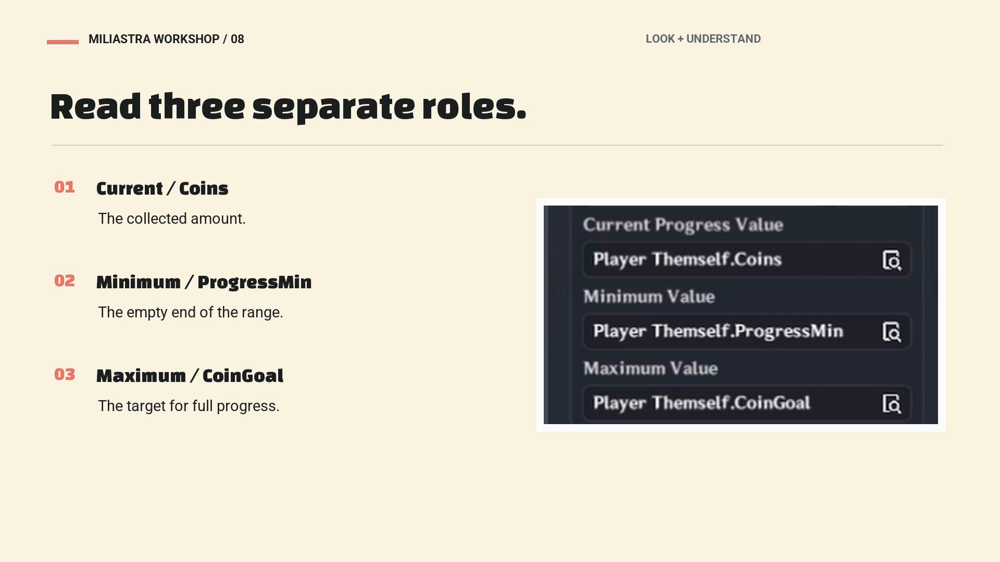
00:5902. Introduce one deliberate mistake
Only in the separate EP08 Practice copy, change Current Progress Value to Player Themself.CoinGoal. Save Changes → Confirm Changes; Quick Save the scene. This is an intentional fault, not the setting to keep in your project.
Official guide: Concept Introduction / Assets / UI Controls / Progress Bar UI Controls
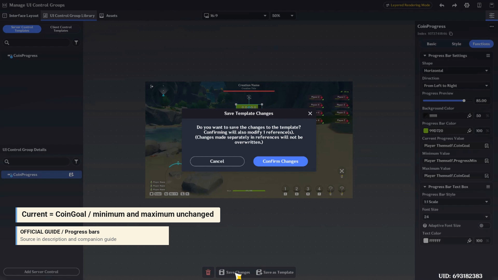
01:2303. Observe before touching a coin
Start a fresh private test and stop at the spawn point. The coins are still waiting, and Start hasn't been pressed, but the bar already reads five out of five. That is our first useful observation. It tells us the full display appeared before a successful pickup, so we shouldn't begin by adding another counting node.
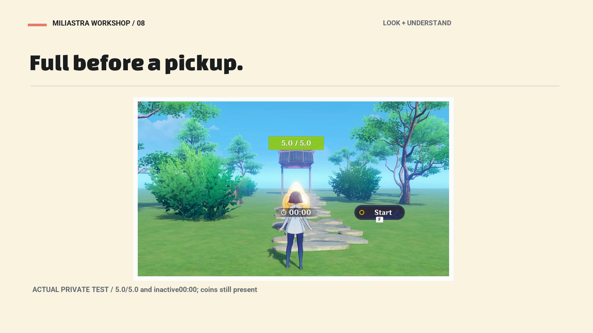
01:4104. Compare a pickup with the display
Press F to start and walk through one coin. It disappears, but the bar stays full. The unchanged bar doesn't tell us whether the counter changed. We need another observation from the data path. Keep this attempt distinct from a retry, so the log and result we read belong to the same test.
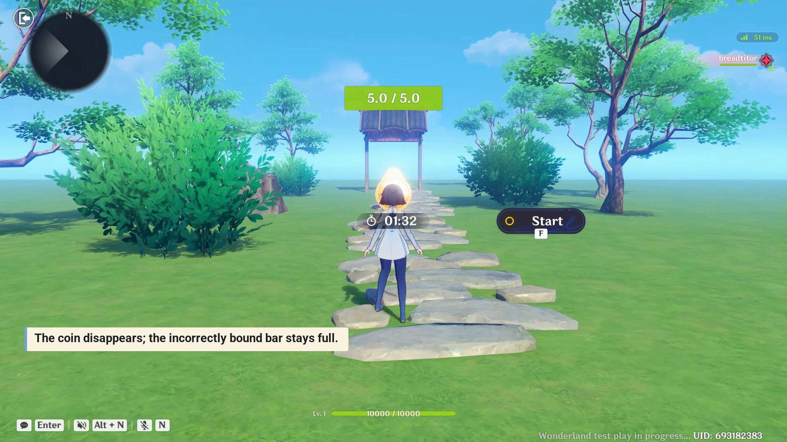
01:5905. Read the native count
Miliastra Sandbox → Window → Log; select the intended Server Entity Node Graph and Confirm Selection. The actual first fault-run log03:06:27 has Stage Start, round started, then Print1. The later retry is a separate run and is not substituted for that identified session.
Official guide: Appendix / Node Graph Advanced Features / Node Graph Logs
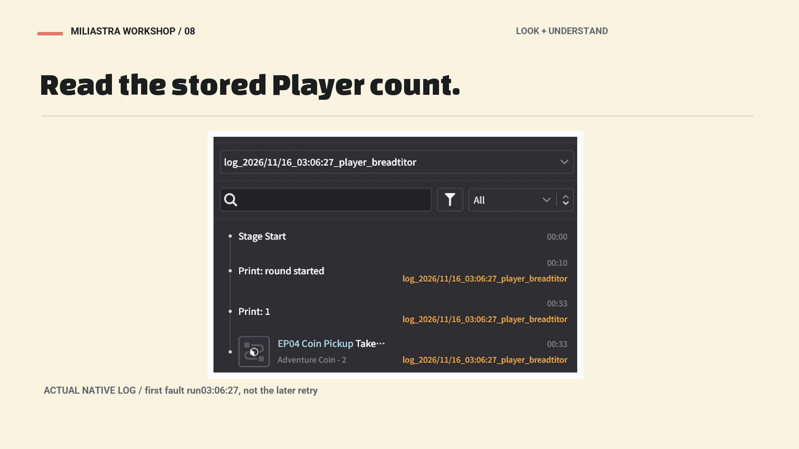
02:1806. Use the result as another check
The same first fault attempt naturally settles Failed/1 Coin. The count log and native result agree; the incorrectly bound HUD had read5.0/5.0. Do not change the goal or add another counter to hide this display fault.
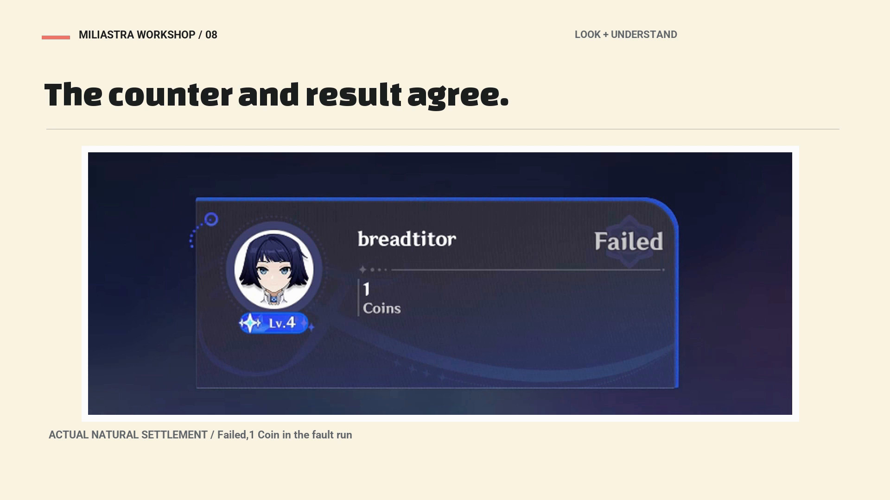
02:3807. Separate the three data roles
Return to the template. Coins is the amount collected. ProgressMin is the empty end of the range. CoinGoal is the amount required for a full bar and the challenge rule. Our mistake puts CoinGoal in both the current and maximum fields. With five compared against five, the bar looks full even when Coins is zero.
Official guide: Concept Introduction / Assets / UI Controls / Progress Bar UI Controls
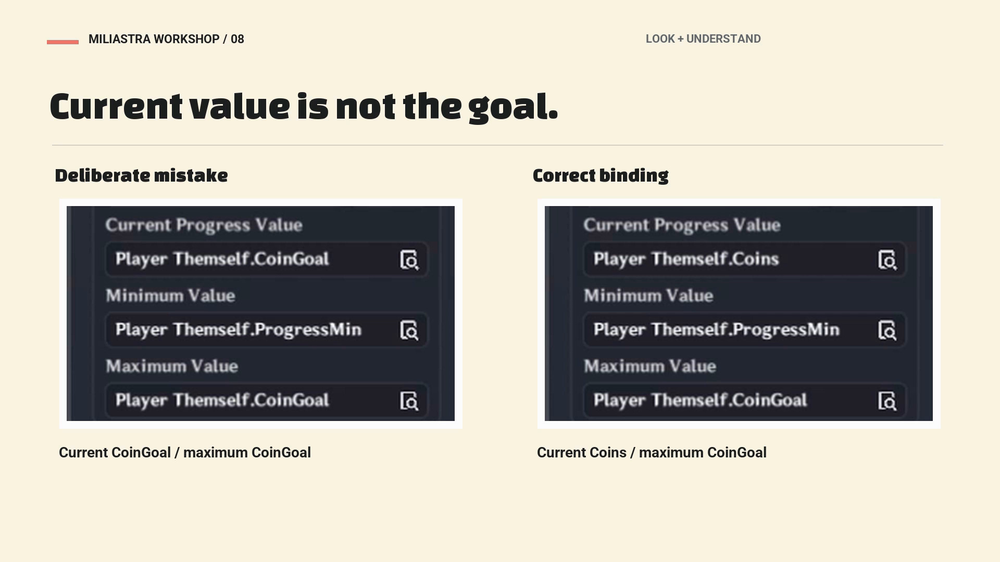
02:5808. Repair the current-value binding
Current Progress Value → Player Themself → Coins. Keep the range fields ProgressMin and CoinGoal. Save Changes → Confirm Changes → Quick Save. Fresh Test Play shows0.0/5.0 before Start, then1.0/5.0 and approximately20% fill after one real pickup.
Official guide: Concept Introduction / Assets / UI Controls / Progress Bar UI Controls
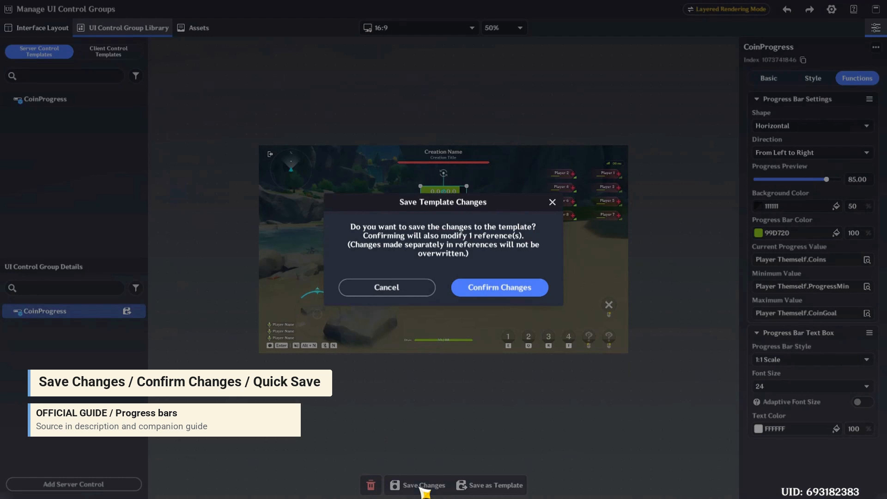
03:2309. Check zero, then one
Run a fresh private test. Before Start, the display is empty at zero out of five. Press F, collect one coin and stop. The bar now reads one out of five with about twenty percent fill. Check this small case before repeating the entire route. It is enough to show that the repaired control follows a real pickup again.
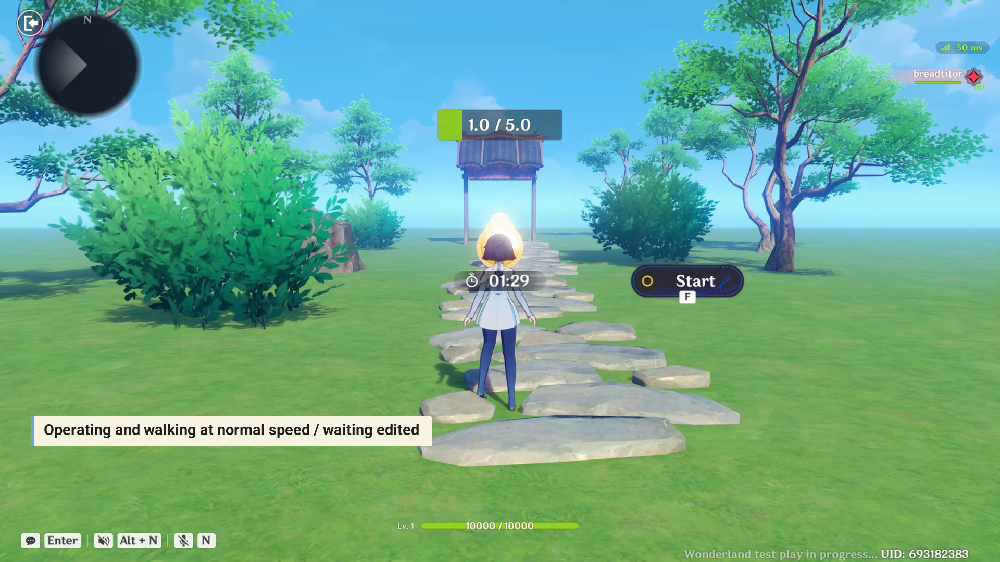
03:4210. Keep a recoverable corrected save
Return to the editor and save the corrected practice copy. Give the saved version a recognisable identity. We now want to check more than the currently open scene. An exported file and a separately imported card will let us find out whether the whole project arrives with the variables, layout, graphs and rules it needs.
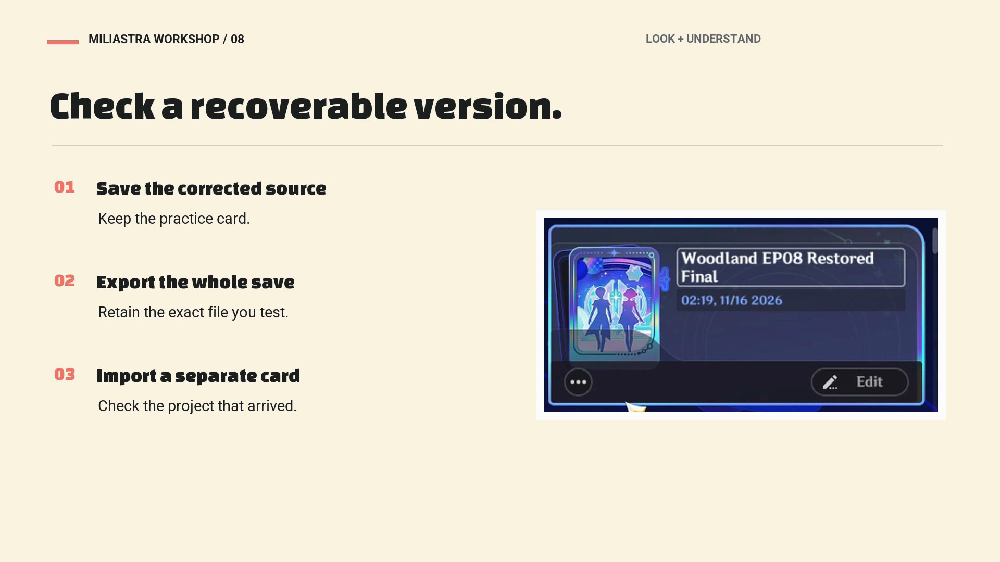
04:0111. Export the whole save
Local Save → corrected practice card menu → Export Save File. The footage shows the actual menu as a reference; the operating-system folder chooser is outside the captured views. The supplied Woodland_EP08_Restored.gil is the exact80366-byte export used in the reimport check.
Official guide: Interface Guide / Import/Export Assets
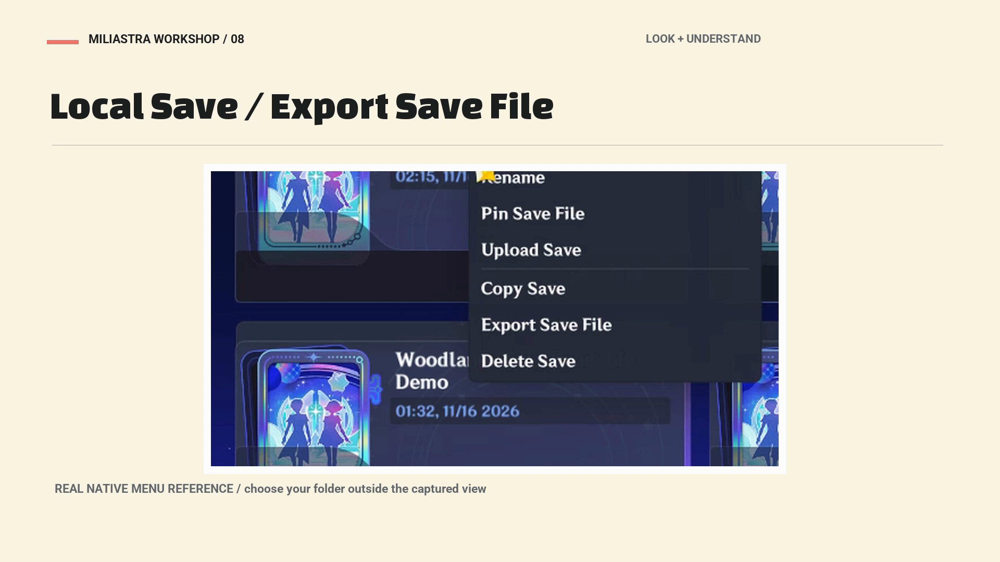
04:2112. Import a separate card
Local Save → Import Save → select your.gil. Keep the original practice card. Give the newly imported card a distinct name and open that card. The reference shows Woodland EP08 Restored Final, the actual imported card, without fabricating a captured file-dialog click.
Official guide: General Knowledge of the Editor / 1.4 Importing and Exporting Saves
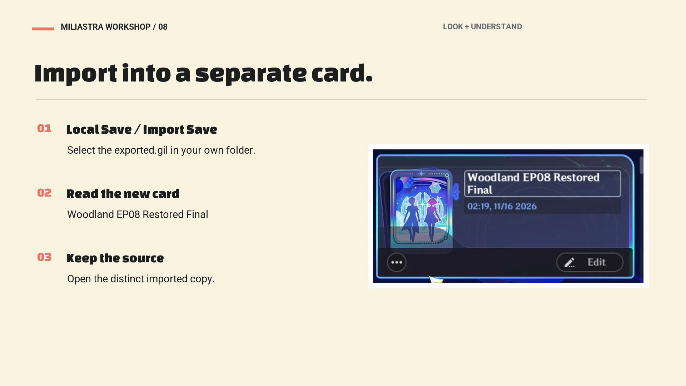
04:4113. Check recognizable scene content
Open the restored card. Check the stone trail, trees, shrubs and five coins. A thumbnail is useful for finding a card, but it doesn't show that its objects and rules arrived correctly. Look at several recognizable parts of the actual scene, including the route the player will use.
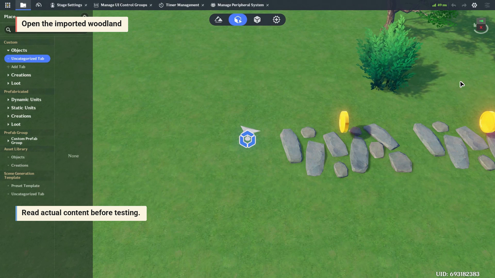
05:2115. Check the timer and layout connections
Timer Management: Round Timer, Countdown120.00 seconds. Manage UI Control Groups → Interface Layout → Default Layout: CoinProgress, Timer, Custom Button. Combat Preset → Custom Class: Default Layout selected. In this exact imported file, actual F and repeated-F behaviour were checked in Test Play.
Official guide: Concept Introduction / Functions / Common Components / Global Timer
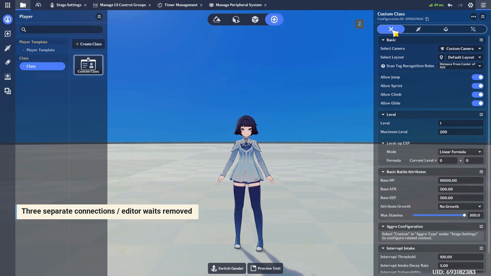
05:4516. Start inside the imported copy
Start a fresh private test from this restored card. We see zero out of five and an inactive timer before Start. Press F to begin. In this imported copy, a second F leaves the countdown decreasing. This checks a real connection in the new card, rather than assuming every reference is correct because import completed.
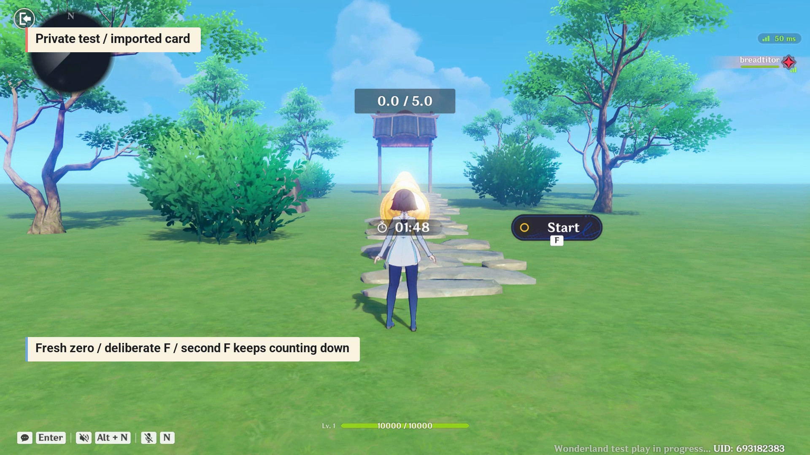
06:0517. Play the restored route
Walk along the route and collect the coins. In this run, the HUD reaches three out of five, then five out of five at the pavilion. The visible coins disappear along the way. The shown movement stays at normal speed; standing and the longer wait are shortened in the lesson.
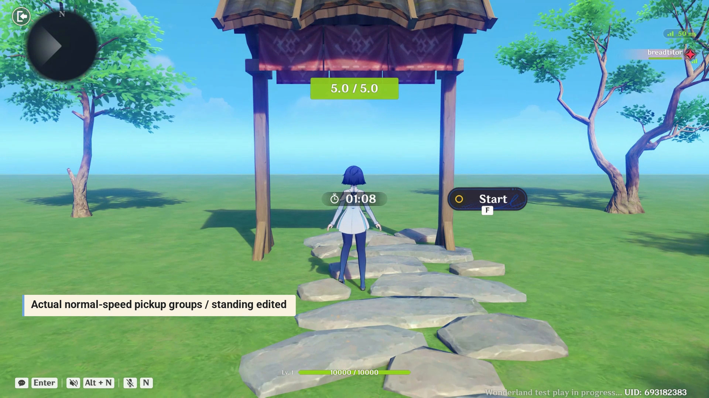
06:2118. Let the restored challenge finish
The supplied exact GIL was separately imported and a complete120-second run played naturally. Visible counter reached3 then5, final result Victory/5 Coins. Original full source is retained; the lesson removes standing and long waiting while operating/walking remains1x.
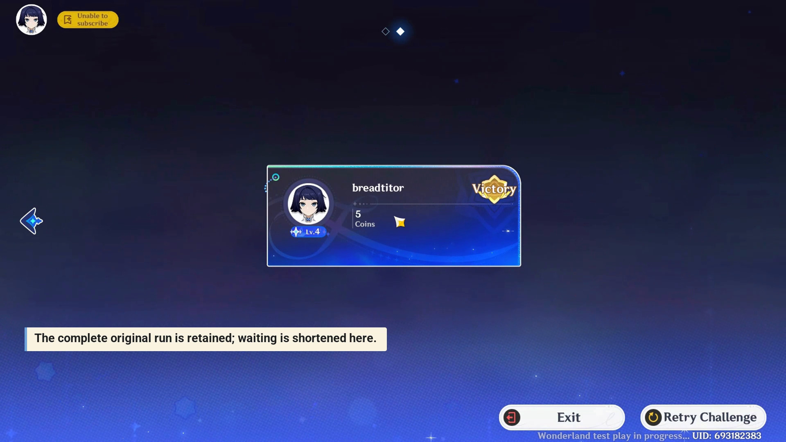
07:0120. Keep the file identity with the result
The Resources folder contains the exact tested whole-save file and file SHA256. A changed file is a new version; keep its own name and relevant test note. Individual graph exports were not separately reimported in this exercise.
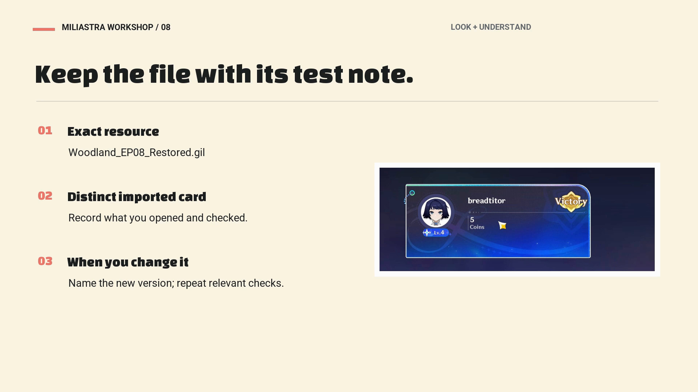
07:1921. Diagnose from observations
Try explaining the fault in one sentence: the bar read the goal instead of the collected count. Then name the observations that supported the repair: a visible pickup, the stored-count log, settlement, and the repaired zero-to-one display. This is a useful way to narrow a problem before replacing parts that already work.
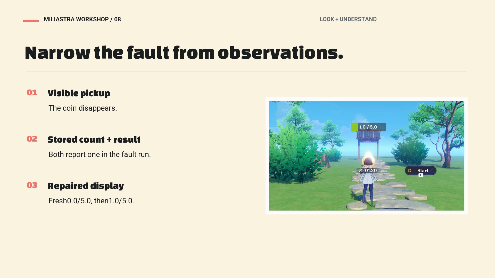
Official references
These explanations use our own words. Native interface labels are shown in the images. A short test covers the actions shown; test the important systems in your own version after changes.